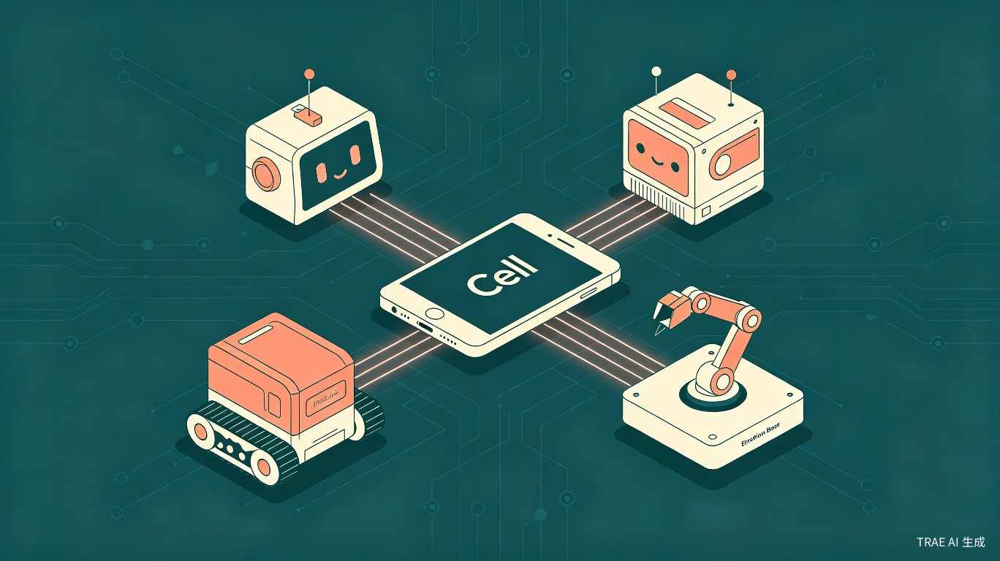
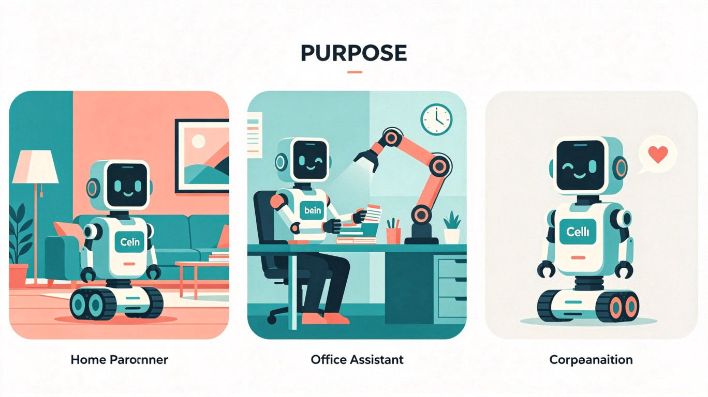

一、创意介绍
想解决什么问题
全球每年产生数千万吨电子垃圾，大量功能完好的旧手机被闲置在抽屉里吃灰；与此同时，机器人开发门槛极高、成本昂贵，普通人难以拥有一个真正属于自己的智能助手。
为什么会想到做这个
英特尔实验室开源的 OpenBot 项目证明，只需 50 美元的硬件成本加一台旧手机，就能造出一台具备自主导航能力的机器人。而创客中国的获奖项目 "清擎智体 Rebot" 则进一步验证了"手机大脑+可替换身体"这一解耦架构的可行性。
这让我想到——为什么不把机器人做成像乐高一样，能通过更换不同的"身体"来实现完全不同的功能？让一台旧手机，今天可以是探索房间的轮式机器人，明天就能变成帮你递东西的机械臂。
产品概述
"细胞（Cell）"是一个"手机大脑 + 可更换身体"的模块化桌面机器人系统。核心是一台旧安卓手机（提供算力、感知与通信），通过通用接口连接不同功能的"身体"模块（轮式底盘、机械臂、情绪底座等），实现"一机多用、随需进化"。

二、目标用户及痛点
面向用户
普通消费者
家有闲置旧手机、想"变废为宝"的用户，无需技术背景即可上手
学生与爱好者
对机器人和 AI 感兴趣、但缺乏硬件开发经验的学习者和创客
办公人群
希望拥有个性化桌面智能助手，提升工作效率的白领用户
使用场景

🏠 居家场景
换上轮式底盘，让机器人自主巡逻、跟随主人移动，或远程查看家中情况
💼 办公场景
换上机械臂模块，完成桌面整理、物品递送等辅助任务
❤️ 陪伴场景
换上情绪底座，让手机"动起来"，根据用户情绪做出拟人化反馈
当前痛点
旧手机浪费严重
全球每年产生大量电子垃圾，而旧手机的计算能力、摄像头、传感器其实非常强大，却被闲置
机器人价格昂贵
市面上的消费级机器人动辄数千元，DIY 机器人又需要懂编程、电路和机械设计
功能单一固化
大多数机器人买回来只能做一件事，无法像手机 App 一样"下载新功能"
三、价值与意义
商业价值
"细胞"开创了一种全新的硬件商业模式——"大脑免费（复用旧手机）+ 身体按需购买"。用户只需花几百元购买一个"身体"模块，就能让闲置手机变成功能完整的机器人。当用户想体验新功能时，只需购买新的身体模块，无需更换整个设备。这大幅降低了用户的尝试成本和复购门槛。
入门成本
仅需一个身体模块的价格，远低于传统机器人
功能扩展
一台手机可适配多种身体，实现功能自由切换
生态潜力
开放的模块接口，支持第三方开发者持续创新
社会价值
全球每年产生数千万吨电子垃圾，而"细胞"让旧手机重获新生。据估算，仅中国就有超过 10 亿部闲置手机，如果其中 1% 被转化为机器人"大脑"，就能创造出千万级的智能设备，同时减少大量的电子垃圾。这不仅是一个商业机会，更是一种可持续的科技生活方式。
效率提升
用户不再需要为每个场景购买专用设备——一台"细胞"通过更换身体，就能在"巡逻机器人""桌面机械臂""情绪陪伴者"之间自由切换，真正实现"一机多用"。
四、TRAE 应用计划
在本次大赛中，我将使用 TRAE Work 完成以下工作：
撰写产品需求文档（PRD）
用 TRAE Work 的 Work 模式梳理产品功能、用户旅程和硬件架构，确保创意方案的完整性和可执行性
生成核心代码框架
利用 TRAE 的代码生成能力，为"身体"模块的微控制器生成电机控制代码和蓝牙通信代码
制作交互式演示 Demo
在初赛阶段，用 TRAE 快速生成一个模拟手机 App 在不同"身体"模块下界面切换的交互式 HTML 页面，直观展示创意
生成参赛 HTML 展示文件
将完整创意方案转化为符合大赛报名要求的 HTML 格式文件并提交（即本文件）
五、技术可行性支撑
OpenBot
英特尔实验室开源项目，证明"旧手机 + 50 美元硬件 = 自主导航机器人"完全可行
清擎智体 Rebot
创客中国获奖项目，验证了"手机大脑 + 可替换身体"解耦架构的商业可行性
OpenClaw 框架
提供 LLM 驱动的 Skill 动态生成机制，可实时生成运动控制代码，赋能智能化
参赛承诺
本人已阅读并理解大赛规则，承诺使用 TRAE 完成创意方案的设计与 Demo 制作，所提交内容为原创。